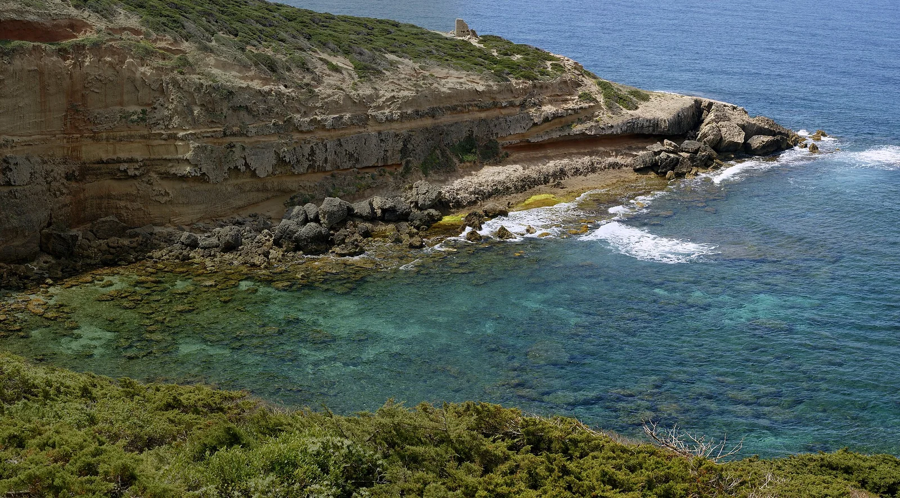

Capo Mannu
Sardaigne, Italie · surf, bodyboard, windsurf

La pointe ouest de la Sardaigne, la plus exposée au mistral : quand il souffle plusieurs jours, la Méditerranée y produit une vraie houle et une droite de récif se met en place.
- Lieu
- Sardaigne, Italie
- Niveau
- Intermédiaire
- Activités
- surf, bodyboard, windsurf
- Type d'eau
- Mer / océan
- Coordonnées
- 40.05, 8.38 (position approximative du secteur)
Dangers à connaître
- Récif calcaire coupant, peu profond.
- Mistral violent, mer désordonnée les premiers jours.
- Courant le long de la pointe.
Le conseil d'Ocean Buddy
Attends le deuxième ou le troisième jour de mistral : la mer se range enfin.
Ouvrir dans Ocean Buddy Télécharger sur l'App Store
Source : Description historique Ocean Buddy · vérification externe en attente.